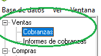
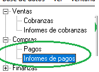

insert logo??
--------------
En esta sección se detallan los pasos a seguir al momento de cerrar la caja de boleteria
Imprimir hoja de Excel de la caja del día de la fecha.
En caso de que se realicen ventas/aportes (ingresos a la caja), iremos a la seccion "Ventas"
de GECOM y haremos doble click o "ENTER" sobre "Cobranzas". (Figura N°1)
Luego "ENTER" sobre "AGREGAR" y utilizaremos el código correspondiente, ya sea:
Aportes: 600101
Ventas en Efectivo: 311001
Ventas con Tarjeta: 112106 (Se carga tanto en Cobranzas como en Ventas)
(Para saber cómo utilizar GECOM para cargar VER Instructivo de carga )
En la seccion "Compras" hacemos doble click en "Informes de Pagos" (Figura N°2),
luego en "PREVEER" (icono lupita, Figura N° 3 ).
Imprimimos la hoja generada y adjuntamos los Vales a ella.
Ingresamos al sistema de ventas y nos dirigimos a la pestaña “Liquidaciones” y hacemos
click en “Consultar/generar” (Figura N° 4)
En el recuadro que se nos abre, hacemos click en el botón “Generar Liquidación”
y chequeamos que la fecha coincida y clicamos “Generar” (Ver Figura N°5)
Seleccionamos la liquidación del día de la fecha generada y clicamos en el boton "Detalle",
lo imprimimos (En esta hoja adjuntaremos los boletos) y luego clicamos el boton
"Resumen de Saldos" y tambien lo imprimimos (Ver Figura N° 6)
Ponemos todo en un sobre (Excepto la hoja de Excel, la misma será abrochada al frente del sobre)
Firma del responsable de caja sobre la hoja abrochada al frente del sobre
(tanto del que cierra la caja como del que la recibe)
Estos son los pasos a seguir para cerrar corectamente la caja.